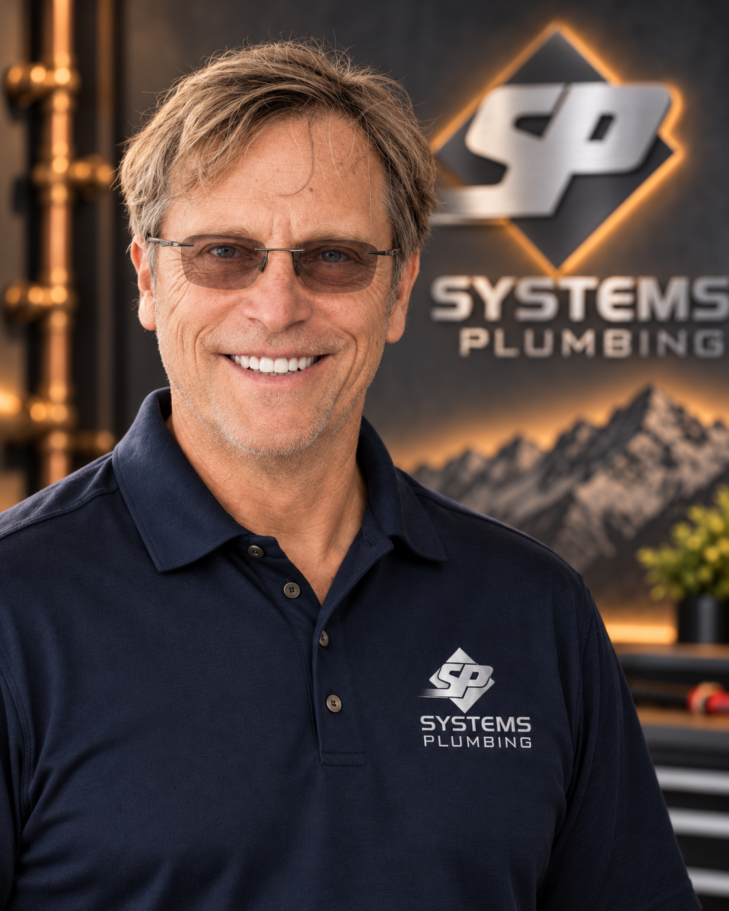

Bruce Kraynak
Co-Founder
Bruce is a Pittsburgh native who moved to Colorado in 1979. He learned his craft from the ground up, progressing from apprentice to master plumber. His career began in the solar energy field before moving into the residential plumbing industry.
Proficient as a field plumber and foreman, Bruce successfully transitioned into project management, general management, and company leadership through extensive real-life experience.
His business development has been enhanced through involvement with peer organizations such as Vistage and service on numerous industry and community nonprofits. He currently serves as president of the Colorado chapter of Plumbing Heating and Cooling Contractors (PHCC) board of trustees, giving back to the industry through trade development, legislative issues, and code improvement.